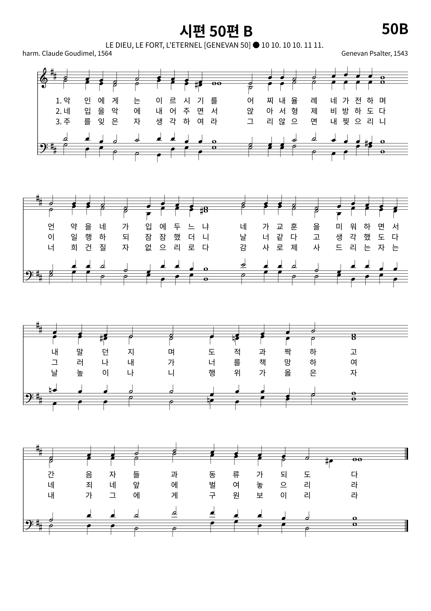

시편 50편 B
LE DIEU, LE FORT, L’ETERNEL [GENEVAN 50] · 10 10. 10 10. 11 11.
곡조: Genevan Psalter, 1543 · 화성: Claude Goudimel, 1564 · 가사: 개역한글판 시편 50편 편역(AI 초벌 편역판 · 신학 감수 전) · 3절
시편 50편은 2곡으로 나누어 실었습니다: A B · 이 곡은 시편 50편 가사의 6~8번째 절입니다.
악보 PDF MusicXML(출력용) MusicXML(반주용, 전주·반복 포함) 개역한글 시편 50편 읽기
악보
← 시편 50편 A 목록반주 재생(준비 중)시편 51편 →
가사
1절 (시편 16~18절)
악인에게는 이르시기를
어찌 내 율례 네가 전하며
언약을 네가 입에 두느냐
네가 교훈을 미워하면서
내 말 던지며 도적과 짝하고
간음자들과 동류가 되도다
악인에게는 이르시기를
어찌 내 율례 네가 전하며
언약을 네가 입에 두느냐
네가 교훈을 미워하면서
내 말 던지며 도적과 짝하고
간음자들과 동류가 되도다
2절 (시편 19~21절)
네 입을 악에 내어 주면서
앉아서 형제 비방하도다
이 일 행하되 잠잠했더니
날 너 같다고 생각했도다
그러나 내가 너를 책망하여
네 죄 네 앞에 벌여 놓으리라
네 입을 악에 내어 주면서
앉아서 형제 비방하도다
이 일 행하되 잠잠했더니
날 너 같다고 생각했도다
그러나 내가 너를 책망하여
네 죄 네 앞에 벌여 놓으리라
3절 (시편 22~23절)
주를 잊은 자 생각하여라
그리 않으면 내 찢으리니
너희 건질 자 없으리로다
감사로 제사 드리는 자는
날 높이나니 행위가 옳은 자
내가 그에게 구원 보이리라
주를 잊은 자 생각하여라
그리 않으면 내 찢으리니
너희 건질 자 없으리로다
감사로 제사 드리는 자는
날 높이나니 행위가 옳은 자
내가 그에게 구원 보이리라